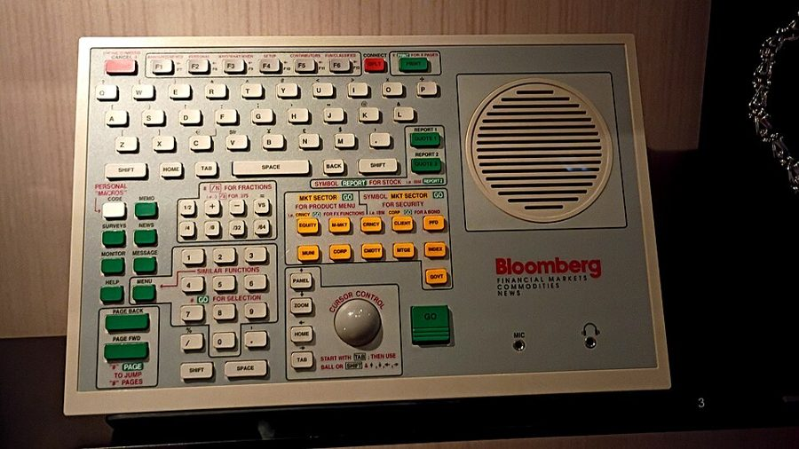
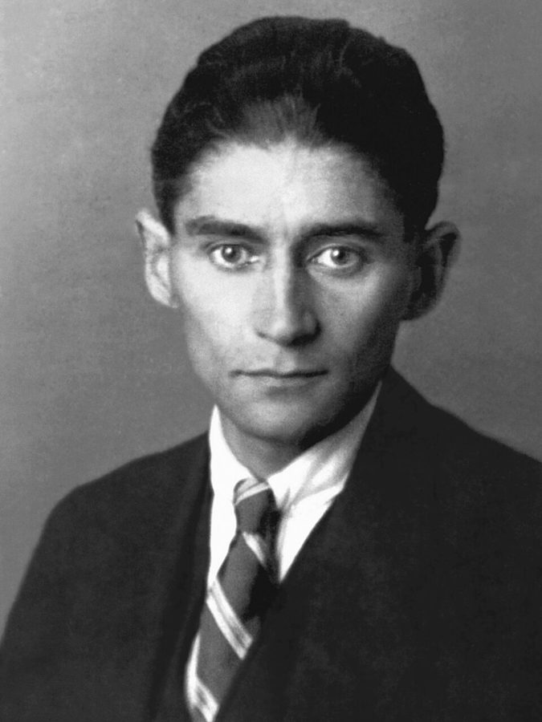

caveman economics
… with the caveman economics approach followed …
「穴居人经济学」：拿祖先的生活解释经济行为
作者半开玩笑的叫法，指从进化心理学出发研究经济行为的一派。
第 11 章的后半。前半讲心理学家怎样发现人的概率直觉有系统性的毛病；这一页先换两个角度解释毛病从哪来（进化心理学、神经科学），再摆出一串各行各业的概率错题：辛普森案的法庭、医生答错的体检题、期权交易员、医学记者、财经电视和彭博终端上的新闻标题。读的时候抓一条线：每碰到一个数，先问它是在什么条件下算的。最好玩的是那道体检题，「动手：模拟器」可以亲手算。

11a 页读到的第 11 章前半讲了 Kahneman 和 Tversky 的启发法与偏误、系统一和系统二，以一句预告收尾：接下来介绍进化心理学的观点。这一页 §10–§13 就是另外两派的解释，§14 起转到实际的例子。§17 回到作者的本行期权，提到第 1、5 章的 John；§18 呼应第 9 章「没有发现」和「发现没有」的区分；§24 把话交给第三部。
§14 作者批评律师和陪审团不懂条件概率，批评得在理，但他自己在这一节举的几个数也有滑脚的地方。读的时候照他教的办法，问问他每个数是在什么条件下算的。详细的在「本站怎么看」。
一个数字摆在面前，为什么连律师、医生、交易员也常常读错它？
读的时候带着这几个问题。不用先找答案，读完回来对照「检查一下理解」。
前四节是一段文献综述，读着最像教科书：§10 介绍进化心理学，§11 作者自称业余，想象三千年前的一座小城，中间插进希腊雕像和普鲁斯特；§12 讲 Gigerenzer 和「瑞士军刀」式的脑子，§13 换成神经科学家和两本书。§14 突然跳进辛普森案的法庭，§15 由卡夫卡说到「不懂数学」和「滥用数学」两头的错。§16 很短，就是一道题。§17 回到作者的本行，是这一页最长的一节，从一个一块钱的期权讲起。§18 起轮到新闻媒体：医学记者、CNBC、电视理财专家、彭博的标题，一个接一个，彼此只靠「概率」二字连着，可以当成一本错题本来读。§22 是两张原书的图，§23 换成打包行李，§24 一段招认收尾。
这一页是原书和译本第 11 章的后半，§10 到 §24 一共 15 节。粗体是本站给的节名，后面是档和译本字数；下面是译本的小标题和这一节在译本电子书里开头的几个字（搜它就能跳过去），再下面是英文原文的开头。「先读」是这一章的骨架，「有空」好看、跳过不丢线，「可跳过」读不读都行。读完打个勾。
先把这一页用到、作者默认你懂的几个概念讲一遍。讲的是概念本身，作者拿它推出什么，读原书时自己看。别页讲过的概念，点链接过去看。
两件事同时发生的概率叫联合概率。它一定不大于其中任何一件单独发生的概率：「明天下雨而且堵车」不可能比「明天下雨」更常见。两件事彼此独立（一件发生与否不影响另一件）时，联合概率等于两个概率相乘：抛两枚硬币都是正面，是 1/2 × 1/2 = 1/4。
不独立时就不能直接相乘。线上事故是个好例子：两台服务器各自一年里宕机的概率都是 1%，如果它们在同一个机房、接同一路电，一起宕机的概率就远大于万分之一。证据也一样：几条证据如果来自同一个源头，叠在一起的分量没有乘出来的那么大。
在这一页：§14 作者说证据会像复利一样叠加，用的就是相乘，还举了粉红色凯迪拉克的例子；琳达问题也在这一节回头提到。
「已知 B 发生了，A 的概率」叫条件概率。它和「已知 A，B 的概率」是两回事：「程序员里戴眼镜的比例」和「戴眼镜的人里程序员的比例」可以差几十倍。
最常见的错是忘了基础比率，也就是还没看任何证据之前，这件事本来有多常见。假设一种病每一百人里有一个，检查能查出九成病人，但会把一成健康人误报成阳性。拿一万人来数：一百个病人里查出 90 个；九千九百个健康人里误报 990 个。阳性一共 1080 人，真病的只占 8.3%。查得「挺准」，阳性却多半是虚惊。把概率换成「多少人里有几个」来数，最不容易错。
在这一页：§14 律师说的杀妻比例、§16 的体检题、§20 的剩余寿命，都是条件放错了地方。模拟器演 §16。
数据里看到一个差别（新药组多活了 3 个人、A 比 B 快 1 秒），先要问：如果其实毫无差别，光靠运气出现这么大的差别，机会有多大？机会很大，就说这个差别不显著：数据还不足以把它和噪声分开。
不显著不等于证明没有差别。样本小的时候，真有效的药也常常测不出显著的效果。程序员熟悉的 A/B 测试就是这样：跑了三天，两组转化率差 0.2%，不显著，正确的结论是「还看不出来」，不是「新版没用」。要说「没有效果」，得有足够大的样本，把可能的效果压到很小的范围里。
在这一页：§18 医学记者把「没有证据」写成「证明无效」；§21 西伯利亚自行车赛赢的那一秒，讲的是显著性。
先猜：一种病每一千人里有一个人得；检查对病人从不漏报，对健康的人有 5% 会误报成阳性。随便抽一个人去查，结果是阳性，他真得病的机会有多大？写下你的答案（§16 说多数医生答 95%），再用模拟器验证。
一格是一个人。调发病率、误报率和漏报率，看查出阳性的那群人里，真病的占多少。先点「书里的题」，再一个一个改。
需要浏览器打开脚本才能运行。
各个控件：「发病率」是多少人里有一个病人；「误报率」是健康的人被查成阳性的比例；「漏报率」是病人被查成阴性的比例；「连着查几次」是对同一批人重复检查，每次都是阳性才算阳性。统计栏的五个数依次是：发病率；按这组设定，每一千人（发病率是万分之一时换成每一万人）里查出阳性的有多少人；其中真病的有多少人；阳性的人里真病的比例；病人里被漏掉的有多少。人数是按比例算出来的平均数，所以会有小数；方块按取整后的人数涂色，比例是精确算的。
这个模拟器只演一件事：阳性的人里有多少是真的，取决于查的是什么人。它假设检查对每个人一样准、每次检查独立；§16 的题干特意写了不管有没有疑似、随机抽人去查，就是普查的情形。至于 §16 说答对的不到五分之一，那是一项真实研究的统计，模拟器复现不了，见「今天怎么看」。
按在书里出现的顺序排，标题前是节号。只讲到读懂这一页需要的程度。
进化心理学认为，人的心理机制和身体器官一样，是在漫长的狩猎采集生活里被自然选择塑造的，要按祖先的环境去理解它。它和 1970 年代兴起的社会生物学一脉相承，作者把两个名字混着用。Pinker 那句话里的 fitness 是进化论的「适应度」，见「原文里的词和句」。作者顺带提到的 Terry Burnham 是经济学家，和生物学家 Jay Phelan 合写了 2000 年的科普书 Mean Genes。
新月沃土是从两河流域沿着叙利亚弯到地中海东岸的一片弧形地带，最早的农业和城市出现在这里；巴力是古代近东的神。那座 Middle-Town（中间镇）和镇上的两个人名，都是作者编来打比方的。他说概率数学要等研究赌博的著作出现才发展起来：16 世纪意大利人 Cardano 写过一本讲掷骰子的书，1654 年 Pascal 和 Fermat 通信讨论一局赌博中途停下该怎样分赌注，一般算作概率论的起点。
作者在书后注释里给了那个小测验，心理学上叫 Wason 选择任务。四张卡片 E、6、K、9，规则是「一面是元音，另一面就是偶数」，要翻哪几张才能检验？多数人答错。换成酒吧查年龄：喝啤酒的、21 岁以上的、喝可乐的、21 岁以下的，该查谁？几乎人人答对。两道题的逻辑一样，都只需查第一个和第四个。进化心理学家说，这是因为人有一个专门抓「占便宜的人」的模块。
「三个脑」（爬行脑、边缘脑、新皮质）是美国神经科学家 Paul MacLean 提出的模型，今天怎么看它，见「今天怎么看」。Antonio Damasio 是葡萄牙出生的美国神经科学家，1994 年出版《笛卡儿的错误》；Joseph LeDoux 是美国神经科学家，1996 年出版《情绪脑》。两本都是写给大众读的书。作者回提的 Claparède，是第 3 章 §7 讲过的那位瑞士医生和他的失忆病人。
O. J. Simpson（1947–2024）是美式橄榄球明星，退役后当演员和体育解说员。1994 年 6 月，他的前妻 Nicole Brown Simpson 和她的朋友 Ron Goldman 在洛杉矶被人杀害，他被控谋杀。1995 年的刑事审判电视全程直播，被叫作「世纪审判」，DNA 和血迹证据是焦点，10 月陪审团判他无罪；1997 年的民事审判则判他要为两人的死赔偿。作者说的「一位哈佛律师」没点名，一般认为指辩护团的 Alan Dershowitz，他是哈佛法学院教授。美国刑事定罪的门槛是「排除合理怀疑」，作者套用的 beyond the shadow of a doubt（毫无疑问）是口语说法，比这个门槛还严。

《审判》的主人公 Joseph K. 一天早上莫名其妙地被捕，到最后也不知道自己犯了什么罪。这部小说卡夫卡生前没有写完，1925 年他去世后由朋友 Max Brod 整理出版。作者说听了辛普森案的庭审，他真怕哪天自己因为一个在概率上毫无道理的理由被抓，站在一群不懂随机性的陪审员面前。
CNBC 是美国的财经电视台，1989 年开播，1990 年代末网络股泡沫时最红，交易时段从早播到晚，§19 作者在健身房听到的就是它。彭博（Bloomberg）是 Michael Bloomberg 1981 年创办的公司，它的终端是交易员桌上的专用电脑，行情、新闻、历史数据、图表、消息都在一台机器上，按年收不低的订阅费。§21 的道琼斯指数在 11000 点上下，是 1999–2001 年前后的水平；作者说的 1997 年 10 月那次，是 10 月 27 日道指一天跌了约 7%，亚洲金融危机正在蔓延。
原书用的是美国人习惯的华氏度：60°F 约 16°C；上下 10 华氏度约等于上下 5.6 摄氏度，上下 30 华氏度约上下 17 摄氏度，上下 500 华氏度约上下 280 摄氏度。译本换算成了摄氏度，有一处漏了字，见「译本勘误」。作者拿亚利桑那当天气稳定的例子，拿芝加哥当变化大的例子。
读英文原文时值得停一下的词和句：交易员的行话、作者的反话和双关、熟词生义。灰色斜体是原句里连续的几个词，在英文电子书里搜它就能找到；标「每个字都认识」的，是每个词都眼熟、合起来意思却变了的，最容易读错。点「记下」收进词本。
对着译本读这一章时，下面这些地方会把人读歪。方框里是译本的原句，在译本电子书里搜它就能找到；灰色斜体是英文原文那一处。只收意思错了、反了、漏了的，措辞上的出入和台湾用语不收。全书的勘误汇总在译本勘误。
… emergence of the gambling literature to …
译本：「我們必須等到賽局文獻出現」
gambling literature 是研究赌博的著作：概率论是从算骰子、纸牌的赔率起步的。「賽局」在台湾通常指博弈论，那是二十世纪的学问，读者会以为作者说概率数学要等博弈论出现才发展，时间就对不上了。
… evolved out of such a habitat …
译本：「我們以遠快於基因的速度進化」
原文说的是：我们离开祖先那种环境的速度，远远快过基因能跟上的速度。译本丢了「离开这种环境」，读来像人类自己进化得比基因还快，和下一句「基因根本没变」打架。
… an analogy to the Swiss Army knife …
译本：「就像瑞士軍刀（有其特定的小工具）似乎井然有序」
原文是对比：我们爱把脑子想成一台由上而下指挥的中央处理器，这些研究者却认为，拿瑞士军刀来比更恰当。in order 是「恰当」，不是「井然有序」。译本读来像在说中央处理器就像瑞士军刀，对比没了。
… mere judgment would probably suffice in …
译本：「單單審判可能就夠了」
作者说的是：原始社会里要看的只有一个维度，凭常识判断就够，用不着数学。§14、§15 讲的都是法庭，「审判」二字很容易让人读成「原始社会开庭审一审就够了」。
… someone selected at random who presented …
译本：「檢查結果為陽性且確實染病的機率」
原文要的是条件概率：已经查出阳性的人里，真病的占多少，答案 1/51。译本说成「阳性而且真病」的概率，那是联合概率：随便抽一个人，他既阳性又真病，约千分之一。这一节考的正是这两样的区别。
… option traders can maintain what I …
译本：「很少選擇權交易人能夠抱牢我所說的」
交易员的行话，指押行情会大动的仓位，典型的做法是买期权：多半到期小亏，偶尔大赚。译本的「長波動」读来像「长周期的波动」，和紧跟着的解释对不上。
… What is less unpleasant: to lose …
译本：「下面哪件事讓人比較不愉快」
原文问：亏 100 次 1 美元，和一次亏 100 美元，哪个没那么难受？答案是后者，因为人对损失的敏感会递减。译本问成哪个更难受，再答「第二件」，就成了一次亏 100 美元更难受，和下一句对不上。
… will nevertheless vary by about 30 …
译本：「但可能增減約七度」
原文用华氏：60 度，上下 30 度。译本换成了摄氏，30 华氏度的温差约等于 17 摄氏度，这里漏了「十」，同段后面又写的是十七度。照十七度读，「冬衣夏衣都要带」才说得通。
读完这一章再看。下面是作者在这一页里的主张，由本站按主张之间的逻辑重新组织，不按原书的顺序；每条后面是节号，拿不准就回书里那一节再读一遍。
他转述了几派：进化心理学家说脑子是为祖先的环境造的，题目换个说法就会做；神经科学家说情绪先于推理。他说原因怎样不要紧，对本书要紧的两点大家一致：做选择时我们不是在想，而是用启发法；我们在今天的世界里犯严重的概率错误。
§10 §12 §13他拿辛普森案说，律师说打妻子的男人只有一成会杀妻，这是没加条件的概率，该问的是妻子被杀、又被丈夫打过时，丈夫是凶手的比例；陪审员也不懂几条证据要相乘。体检题里多数医生答 95%，正确的答案接近 2%。
§14 §16一个九成会作废的期权，期望值照样可以是一块钱。他说很少有交易员受得了天天小亏、偶尔大赚，多数人当权利金卖方，因为天天小赚舒服，而人对损失的敏感会递减；有些金融学者还拿统计替卖期权辩护。依据是他做期权交易的观察。
§17医学记者把「没有证据」写成「证明没有」；道指在 11000 点涨 1.03 点不值得解释，要解释先得显著、再得有因果。他自己只看超出平日幅度的变动。打包看的是温差，不是平均气温。最后他承认自己也生来会被随机性愚弄，只是知道这一点。
§18 §21 §23 §24合起来：一个数摆在面前，先问它是在什么条件下算的、离平常有多远、把握有多大。作者说律师、医生、交易员和记者都会在这里栽跟头，他自己也不例外。
这一章合起来：前半（11a 页）讲人为什么「概率盲」：脑子一次只装得下一种结果，想象不出按概率加权的混合；我们靠一堆彼此不一致的启发法做决定，只看离上一个参照点的变化。作者照 Kahneman 和 Tversky 的说法，说这是有缺陷，不只是不完美，并用系统一和系统二把它分成快慢两套。后半换上进化心理学和神经科学的解释，说它们在要紧处一致，再摆出法庭、医生、期权交易员和记者的错题，最后承认自己也一样会上当，把话交给第三部。
They confuse the expected value and the most likely scenario— §17。本站译：他们分不清期望值和最可能的结局
一句下诊断的话，主语是「连专业人士」。关键是两个名词：expected value 是所有结局按概率加权的平均，most likely scenario 只是其中最常见的那一个。九成作废的期权，最可能的结局是零，期望值却是一块钱。译本：「把期望值和最可能出現的情境混為一談」译得准。容易误读成「专业人士不会算」，作者的意思是他们会算，却在心里给最常见的那种结局加了太多分量。
It is not the estimate or the forecast that matters so much as the degree of confidence with the opinion.— §23。本站译：要紧的不是估计或预测本身，而是你对这个看法有多大把握。
一句下判断的话，紧接着就是打包行李的比方。degree of confidence 在这里是口语的「把握多大」，接下来他讲的其实是波动范围（方差）：同样是 60 度，上下 10 度和上下 30 度，要带的衣服完全不同。译本：「不如人們對某個意見懷有的信賴水準」用的是统计学的术语「信賴水準」，读者容易以为作者在讲 95% 置信区间那一套，其实他说得松得多。
这本书 2004 年出第二版，书里讲的多是 1980–2003 年的事。下面挑出这一页里能被后来的研究或事情检验的说法，分「书里 / 当时 / 今天」几栏，并给一个结论。结论判的是标题里「书里的说法：」后面那一句。全书的这一节汇总在今天怎么看。
读完作者的主张，再看它站不站得住。每一块摆出三样：主流怎么看，作者怎么看，本站的评论。最后一句是本站对这一页的总体判断。
主流看法：把「无辜的人碰巧和证据匹配的概率」当成「匹配的人是无辜的概率」，统计学和法学界叫它「检察官谬误」，是法庭上最常见的概率错误之一。统计学家 I. J. Good 1995 年在《自然》上专门写信讨论辛普森案：该问的是妻子被杀、丈夫又打过她时，丈夫是凶手的概率，这和作者的方向一致。
作者的看法：律师用的是没加条件的概率；证据要相乘，叠起来对辛普森不利的赔率高到几万亿万亿。§14
本站的评论：方向对，这一节值得读。但他自己有两处要打折。血型这样的人每五十万人里才有一个，不等于辛普森不是凶手的概率只有五十万分之一，把这两句当成一句，正是检察官谬误。几条证据直接相乘，前提是彼此独立，「他是丈夫」和「他打过她」就谈不上独立。他还把琳达问题记在可得性名下，那其实是联合概率的错。书里的 10%、50% 也没给出处。
主流看法：金融研究大多发现，长期看，买保护的一方付的价钱偏高，卖方平均是赚的（Coval 和 Shumway 2001 年对股指期权的研究，见第 6 章的「今天怎么看」）。但卖方的亏损集中在少数几天：2018 年 2 月 5 日波动率指数 VIX 一天涨了一倍多，押波动率下跌的产品 XIV 当天亏掉九成以上，随后被发行方瑞士信贷提前清盘。
作者的看法：他见过的期权交易员多数当权利金卖方，是因为天天小赚舒服、人对损失的敏感递减：天天赚一块、最后一次全赔掉，享乐上舒服，经济上说不通；人明知卖期权不是好事还照卖，爆仓时赔的多半是别人的钱。§17
本站的评论：要分开两句话。「卖方日子舒服、偶尔一次赔个大的」有大量事实撑着，XIV 就是活例子；拿别人的钱冒这种险，激励也确实歪。「所以卖期权不是好事」却没那么简单：保护如果常年偏贵，卖方平均是赚的，问题在于能不能熬过那几天、亏的是谁的钱。作者自己站在买方那边（第 6 章讲过他的生意），这段话里有他的立场。
主流看法：判断一个变动大不大，统计上的做法是看它比平常的波动大几倍。金融学早就知道价格的涨跌是「肥尾」的：Mandelbrot 1963 年研究棉花价格时就指出，大起大落比正态分布预言的常见得多。
作者的看法：只看超出平日幅度的变动；2% 的分量是 1% 的四到十倍，7% 可能是几十亿倍。§21
本站的评论：「别给小波动找原因」完全对，今天的财经快讯照样天天在给 0.1% 的涨跌配理由。作者没说倍数怎么来的，看来是按正态分布的尾巴估的：把 1% 当一个标准差，2% 的变动比 1% 罕见约 7 倍，7% 罕见约一千亿倍。可作者后来在《黑天鹅》里最反对的，正是拿正态分布看市场；在真实的肥尾市场里，大变动没那么罕见，倍数要小得多。这段的直觉可取，数字别当真。
本站的总体看法：这一页的错题本很实用：条件概率、期望值和最可能的结局、显著性、波动范围，四样都值得带走，那道体检题尤其要亲手算一遍。作者在序里自己说第 11 章是全书「最不原创」的一章，前四节正是一段综述；三个脑的框架今天已经被放弃。他批评别人算错的地方，自己也偶有滑脚，正好照他教的办法检查他。
先在心里答，再点开。答错的那题，回书里把对应那一节再读一遍。
一是我们做选择时并不真的在想，而是用启发法；二是我们在今天的世界里会犯严重的概率错误。分歧在原因：一边说规则本身带着偏误，一边说是环境变了、题目的说法不对路。
按一万人数：100 个病人全查出，9900 个健康人里误报 495 个，100 ÷ 595 约 17%。来看病的人本来就更可能有病，基础比率高得多；2% 只对随机普查成立。
平均不赚不赔：九成时候赚 1 美元，一成时候赔 10 美元、扣掉收的 1 美元净亏 9 美元，0.9 × 1 − 0.1 × 9 = 0。最常见的结局是白赚 1 美元，所以容易被当成白捡的钱。
大盘两个月都是 80，一直在高点上；而每个月都有一只股票离高点 40%，另一只在高点，个股平均离高点 20%。各股不在同一时间见顶，「大盘离高点近、个股离高点远」并不矛盾。
73 岁是出生时对一整批人算的平均，里面有很早就去世的人。已经活到 68 岁的人不在那些人里，他的剩余寿命要按「活到 68 岁的人」重新算，会比 5 年长。
后者。不显著只说明数据还不足以和运气分开，不等于证明没有效果。把它写成「证明无效」，就是作者说的医学记者的错。
决定带什么衣服的，是可能碰上的最冷和最热，不是平均。浮动小，一套衣服就够；浮动大，冬衣夏衣都得带。
用一句话说这一页：
想一想：你最近一次看到「某某指标下降了 0.3%，因为……」这样的解释（工作周报、监控大盘、新闻都算），那个变动比它平常的起伏大吗？如果不大，那个原因还站得住吗？
读过又忘了，从这里想起来。挑的是这一页最值得记住的故事和说法，不按原书顺序；每条后面是节号，想细看就回书里那一节。全书各页的这一节都收在全书回顾。
一句话：一个概率先问条件：「病人里查出阳性的比例」和「阳性的人里真病的比例」，可以差几十倍。
千分之一的病，5% 的误报。一千人里一个真病人，被约 50 个误报的健康人围着，阳性的人里真病的只有 1/51。作者说多数医生答 95%。
§16股价 100 美元时，花 1 美元买下一个月后按 110 美元买进的权利。九成会作废，期望值却仍是 1 美元：最可能的结局不等于期望值。
§17交易员这样说卖期权的人：天天赚一点，偶尔一次赔个大的。作者说他见过的期权交易员大多是这种，爆仓时赔的通常是别人的钱。
§17电视理财专家说平均寿命 73 岁，所以 68 岁的人该按 5 年规划。作者反问：那 80 岁的人，还剩负 7 年吗？
§20彭博终端上满屏这样的标题：道指在 11000 点涨 1.03 点，因为利率下滑。不到万分之一的变动，作者说根本不值得解释。
§21同样平均 60 华氏度，亚利桑那上下 10 度，芝加哥上下 30 度，要带的衣服完全不同。决定怎么做的是波动范围，不是平均。
§23